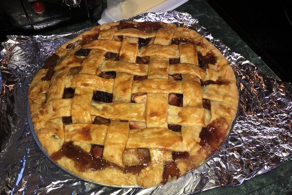

Apple Blackberry Pie Recipe

Description
This information is an exerpt from: this website
A twist on traditional apple pie. Perfect for those who love apple pie but are looking for something a bit less sweet.
Ingredients
- 1/4 cup butter
- 1 teaspoon backing soda
- 1 tablespoon all-purpose flour
- 1/4 cup water
- 1/2 cup of white sugar
- 1/2 cup brown sugar
- 1 teaspoon lemon juic
- 1 (6 ounce) container blackberries, halved - divided
- 1 recipe pastry for a 9-inch double-crust pie
- 4 large Granny Smith apple-peeled, cored, and sliced
DIRECTIONS: Steps in making Apple Blackberry Pie
-
Preheat oven to 350 degrees F (175 degrees C). Lightly grease a 9x5 inch loaf pan.
-
In a large bowl, combine flour, baking soda and salt. In a separate bowl, cream together butter and brown sugar. Stir in eggs and mashed bananas until well blended. Stir banana mixture into flour mixture; stir just to moisten. Pour batter into prepared loaf pan.
-
Bake in preheated oven for 60 to 65 minutes, until a toothpick inserted into center of the loaf comes out clean. Let bread cool in pan for 10 minutes, then turn out onto a wire rack.